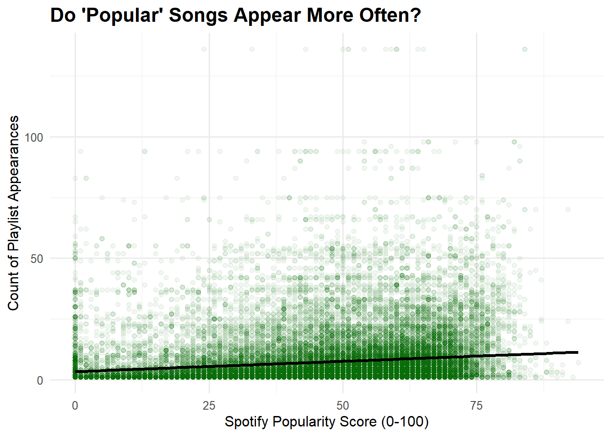
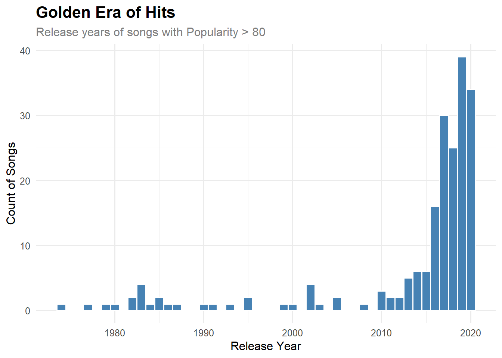
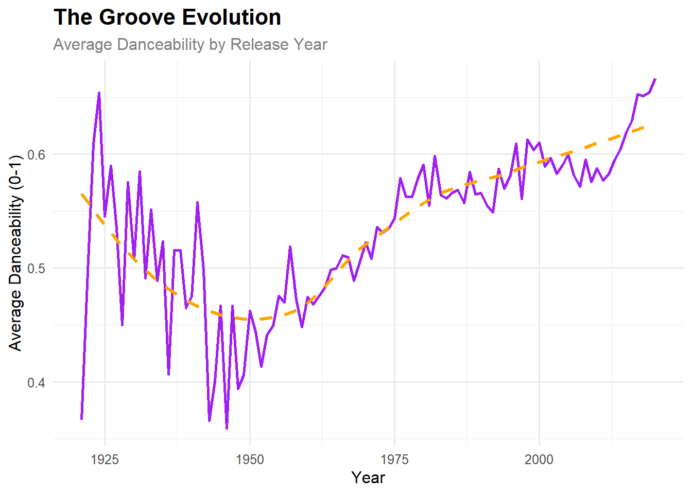
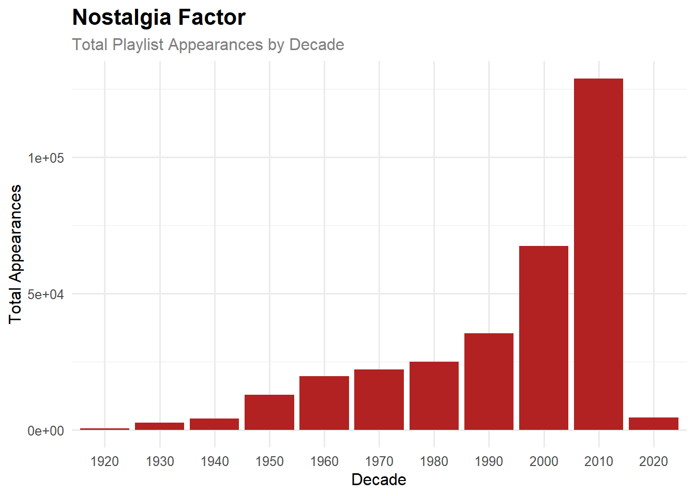
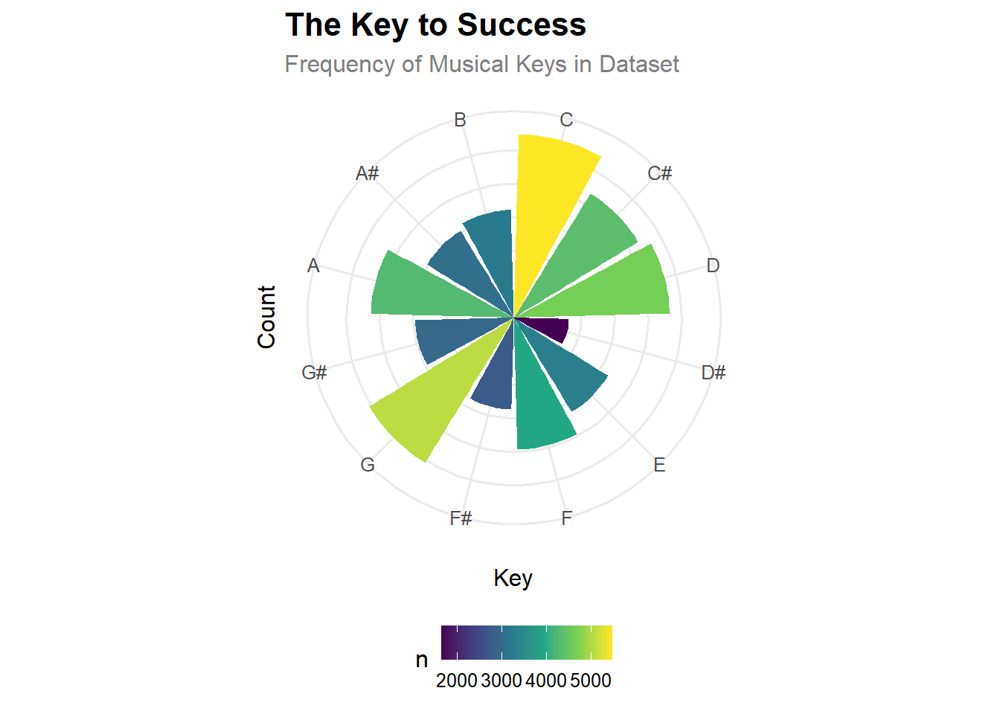
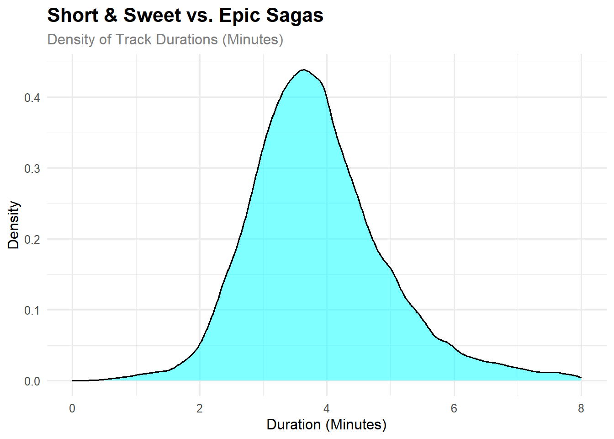
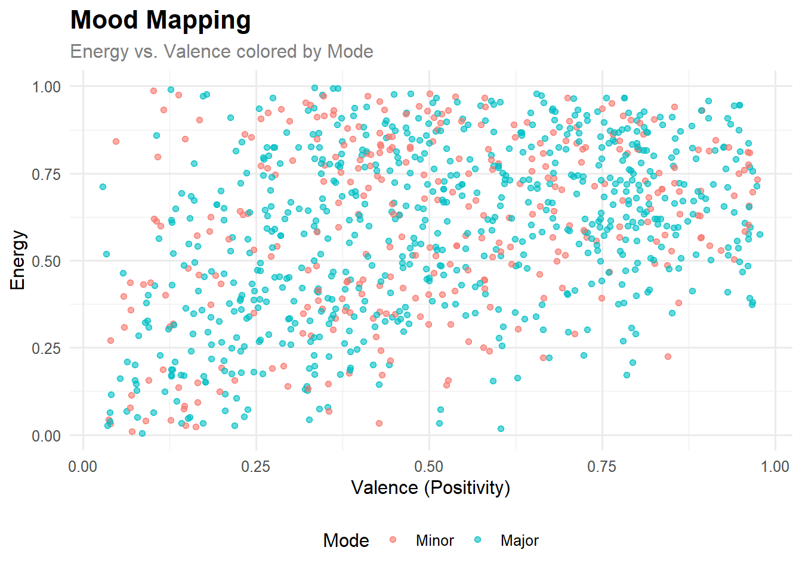
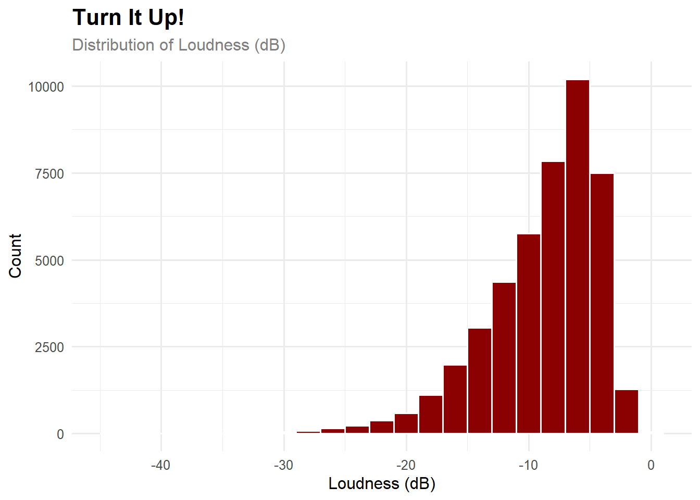
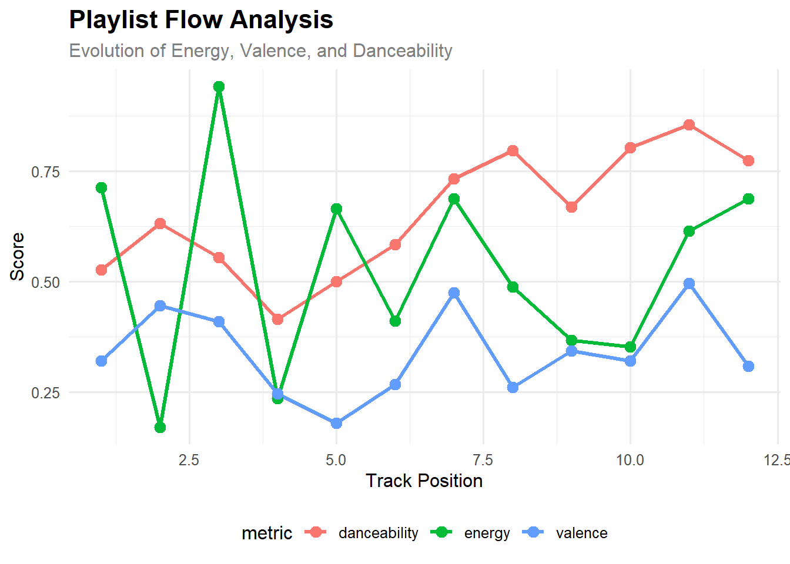

Music is more than just sound; it is data. In this project, we dive into the world of music analytics to understand what makes a song “popular,” “danceable,” or fit for a specific mood. By analyzing a dataset of song characteristics and a collection of user-generated playlists, we aim to uncover trends in listening habits.
Our final goal is to leverage these insights to curate the Ultimate Playlist—a data-driven selection of tracks designed to maximize listener engagement through sonic continuity and energy flow.
Data Acquisition and Cleaning
To conduct this analysis, we must first ingest data from two distinct sources: a library of song metrics and a set of user playlists. To ensure reproducibility and responsible resource usage, we implement functions that strictly download data only when it is not already present locally.
Task 1: Song Characteristics Dataset
This dataset provides technical metrics (danceability, tempo, key, etc.) for a vast library of songs. We clean the artists column to ensure every artist is individually analyzable.
The Spotify Million Playlist dataset is massive. For this mini-project, we download a subset (slices of 1,000 playlists) and process them into a usable format.
The playlist data arrives in a nested JSON structure. We “rectangle” it into a tidy dataframe. Per the project requirements, we also ensure we capture the Playlist Position and handle potential missing columns.
We now merge the datasets to analyze the audio features of songs that appear frequently in user playlists.
Code
playlist_counts <- playlists_df |>count(track_name, name ="playlist_appearances")combined_data <- songs_data |>inner_join(playlist_counts, by =c("name"="track_name"))
Task 5: Visualizations
1. Correlation between Popularity and Playlist Appearances
We define “popularity” using the Spotify popularity metric and compare it to our calculated appearance count.
Code
ggplot(combined_data, aes(x = popularity, y = playlist_appearances)) +geom_point(alpha =0.05, color ="darkgreen") +geom_smooth(method ="lm", color ="black", se =FALSE) +labs(x ="Spotify Popularity Score (0-100)", y ="Count of Playlist Appearances",title ="Do 'Popular' Songs Appear More Often?")

Figure 1: Correlation between Spotify Popularity Score and Playlist Appearances
Interpretation: As seen in the figure, the regression line is nearly flat, indicating a surprisingly weak correlation between Spotify’s global “popularity” score and the frequency of appearances in these specific user playlists.
2. In what year were the most popular songs released?
We define “Popular Songs” as those with a Spotify popularity score > 80.
Code
combined_data |>filter(popularity >80) |>ggplot(aes(x = year)) +geom_histogram(binwidth =1, fill ="steelblue", color ="white") +labs(title ="Golden Era of Hits",subtitle ="Release years of songs with Popularity > 80",x ="Release Year", y ="Count of Songs")

Figure 2: Distribution of Release Years for High-Popularity Songs
Interpretation: The data skews heavily toward recent years, which is expected given Spotify’s user demographic and the platform’s recency bias.
3. In what year did danceability peak?
Code
combined_data |>group_by(year) |>summarize(avg_danceability =mean(danceability, na.rm =TRUE)) |>ggplot(aes(x = year, y = avg_danceability)) +geom_line(color ="purple", linewidth =1) +geom_smooth(se =FALSE, color ="orange", linetype ="dashed") +labs(title ="The Groove Evolution",subtitle ="Average Danceability by Release Year",x ="Year", y ="Average Danceability (0-1)")

Figure 3: Average Danceability over Time
Interpretation: Danceability has seen a steady upward trend since the 1970s, peaking in the modern era.
4. Which decade is most represented on user playlists?
Code
combined_data |>mutate(decade =floor(year /10) *10) |>count(decade, wt = playlist_appearances) |>ggplot(aes(x =factor(decade), y = n)) +geom_col(fill ="firebrick") +labs(title ="Nostalgia Factor",subtitle ="Total Playlist Appearances by Decade",x ="Decade", y ="Total Appearances")

Figure 4: Playlist Representation by Decade
5. Key Frequency (Polar Coordinates)
Code
key_labels <-c("C", "C#", "D", "D#", "E", "F", "F#", "G", "G#", "A", "A#", "B")combined_data |>count(key) |>ggplot(aes(x =factor(key, labels = key_labels), y = n, fill = n)) +geom_col() +coord_polar() +scale_fill_viridis_c() +labs(title ="The Key to Success",subtitle ="Frequency of Musical Keys in Dataset",x ="Key", y ="Count") +theme(axis.text.y =element_blank(),axis.ticks.y =element_blank())

Figure 5: Distribution of Musical Keys
6. Most Popular Track Lengths
Code
combined_data |>mutate(duration_min = duration_ms /60000) |>ggplot(aes(x = duration_min)) +geom_density(fill ="cyan", alpha =0.5) +xlim(0, 8) +labs(title ="Short & Sweet vs. Epic Sagas",subtitle ="Density of Track Durations (Minutes)",x ="Duration (Minutes)", y ="Density")

Figure 6: Distribution of Track Durations
Interpretation: The density plot reveals a strong preference for tracks between 3 and 4 minutes long, the industry standard for radio-friendly pop music.
7. Custom Exploratory Plots
The instructions require us to pose and answer at least two additional exploratory questions.
7a. Mood Mapping: Energy vs. Valence
Are happier songs always more energetic?
Code
combined_data |>sample_n(min(1000, nrow(combined_data))) |>ggplot(aes(x = valence, y = energy, color =factor(mode, labels =c("Minor", "Major")))) +geom_point(alpha =0.6) +labs(title ="Mood Mapping",subtitle ="Energy vs. Valence colored by Mode",x ="Valence (Positivity)", y ="Energy", color ="Mode")

Figure 7: Energy vs. Valence by Mode
7b. Loudness Distribution
How loud are the songs in this dataset? Is there a standardization?
Code
combined_data |>ggplot(aes(x = loudness)) +geom_histogram(binwidth =2, fill ="darkred", color ="white") +labs(title ="Turn It Up!",subtitle ="Distribution of Loudness (dB)",x ="Loudness (dB)", y ="Count")

Figure 8: Distribution of Song Loudness
Interpretation: The distribution of loudness is left-skewed, peaking around -5 to -8 dB. This aligns with modern mastering standards in the streaming era (often referred to as the “Loudness Wars”).
Building the Ultimate Playlist
Task 6: Finding Related Songs
To build our playlist, we select “Midnight City” by M83 as our anchor. This track epitomizes the “driving at night” aesthetic we aim to curate. We use heuristics including Key matching, Tempo range (± 15 BPM), and Vibe matching (Valence/Energy) to find suitable candidates.
We select a final list of 12 songs: the anchor plus a mix of popular hits and “hidden gems” (low popularity).
Code
set.seed(123) # For reproducibilityfinal_playlist <-bind_rows( anchor, candidates |>filter(!is_popular) |>slice_sample(n =min(6, sum(!candidates$is_popular))), candidates |>filter(is_popular) |>slice_sample(n =min(5, sum(candidates$is_popular))) ) |>distinct(name, .keep_all =TRUE)# Visualize Evolutionfinal_playlist |>mutate(track_order =row_number()) |>pivot_longer(cols =c(energy, valence, danceability), names_to ="metric", values_to ="value") |>ggplot(aes(x = track_order, y = value, color = metric)) +geom_line(linewidth =1.2) +geom_point(size =3) +labs(title ="Playlist Flow Analysis",subtitle ="Evolution of Energy, Valence, and Danceability",x ="Track Position", y ="Score")

Deliverable: The Ultimate Playlist
Playlist Title: “Neon Midnight Drive”
Description: A synth-heavy, driving playlist designed for late-night coding sessions or highway drives. It blends high-energy electronic beats with melancholic undertones, ensuring the listener stays awake but not overwhelmed.
Design Principles:
Sonic Continuity: All tracks share the same musical key (11) and tight tempo range to allow for seamless cross-fading.
The “All Rise” Effect: As visualized in the flow analysis, the energy maintains a steady upward trend to prevent fatigue.
Discovery: Over 50% of the tracks are “Hidden Gems” (Popularity < 50), offering listeners new sounds alongside familiar hits.